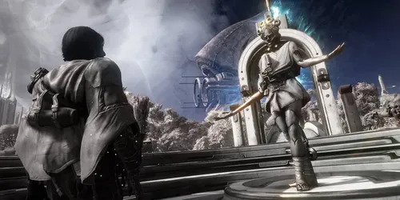
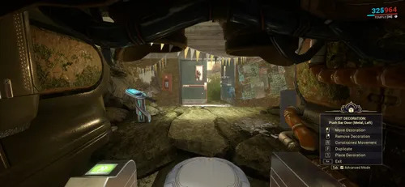
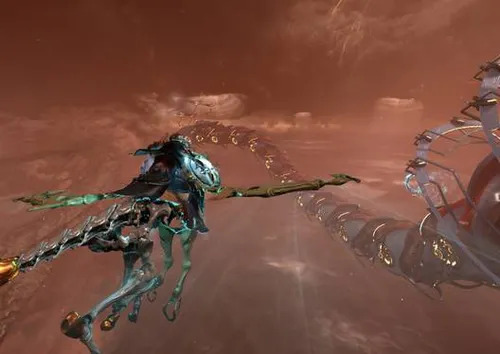
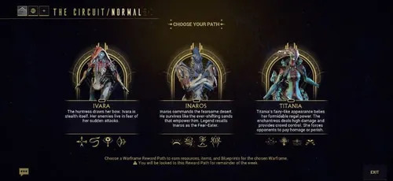

Experiencia Duviri
Explora el mundo abierto, avanza en la historia de la espiral y alterna objetivos principales con actividades secundarias.

Un reino del Vacío que cambia con las emociones de su soberano. Explora sus paisajes, ayuda a sus habitantes y decide cómo afrontar cada espiral.
Duviri es una experiencia narrativa y de exploración protagonizada por el Drifter. Combina combate cuerpo a cuerpo, viajes a caballo, objetivos por el mundo abierto y misiones de Warframe en el Circuito. Sus actividades pueden jugarse de forma independiente del recorrido normal por el mapa estelar.
Duviri es un mundo fantástico dentro del Vacío, vinculado a la historia del Drifter y al Dominus Thrax. El reino cambia según el estado emocional de su gobernante: el paisaje, la música y los acontecimientos reflejan la espiral activa.
La aventura mezcla exploración con una historia por capítulos. Puedes recorrer las islas flotantes, hablar con sus habitantes, descubrir lugares y completar tareas opcionales entre los objetivos principales.
La misión «La paradoja de Duviri» presenta al Drifter y explica las mecánicas principales. Al terminarla, Duviri queda disponible desde su acceso en el mapa estelar. Desde allí puedes escoger la actividad que encaja con lo que quieres hacer:
Explora el mundo abierto, avanza en la historia de la espiral y alterna objetivos principales con actividades secundarias.
Concéntrate en la cadena principal de objetivos y en el enfrentamiento final, con menos desvíos de exploración.
Entra en el Inframundo con un Warframe y completa rondas de misiones para conseguir recompensas de progresión.
La espiral activa representa una emoción del Dominus Thrax y da personalidad a la jornada. Las cinco emociones son Alegría, Ira, Tristeza, Miedo y Envidia. Cada una está asociada a una parte de la historia y a un tono visual distinto.
Durante una expedición, sigue los marcadores de objetivos para avanzar el capítulo actual. Las tareas opcionales pueden darte recursos, decretos y más oportunidades para prepararte antes de afrontar el desenlace de la espiral.

En Duviri controlas al Drifter. Su combate se centra en armas cuerpo a cuerpo, esquivas, bloqueos y contraataques; durante la aventura también puede usar armas de fuego y herramientas que se desbloquean al progresar.
El Kaithe es una montura voladora que sirve para cruzar rápidamente las islas. Puedes invocarlo en las zonas adecuadas, cabalgar por el terreno y elevarte para llegar a lugares alejados. Aprender a alternar entre el viaje a pie y la montura hace más cómoda la exploración.

Los decretos son mejoras que eliges mientras juegas una expedición de Duviri. Se consiguen al completar objetivos, desafíos y encuentros. Cada uno aporta una ventaja y, al reunir varios, puedes crear combinaciones que cambian la forma de combatir o desplazarte.
Al empezar, la Cueva de Teshin ofrece una selección de Warframes y armas para esa partida. Las opciones dependen de tu colección y de las alternativas disponibles; si aún no tienes cierto equipo, el juego puede ofrecer una configuración prestada. Revisa las opciones antes de salir para elegir el estilo que prefieres.
El Circuito se desarrolla en el Inframundo y se juega con Warframes. Cada ronda propone una misión diferente, como Defensa, Supervivencia o Excavación; al completarlas, el equipo puede continuar para avanzar más rondas o abandonar con las recompensas acumuladas.
Al entrar, eliges entre las opciones de Warframe, armas y modificaciones que presenta la Cueva de Teshin. La selección puede incluir equipo de tu inventario y alternativas prestadas. Por eso es útil conocer varias armas y Warframes, aunque no tengas todo el arsenal desbloqueado.
El Circuito normal ofrece una ruta de recompensas propia. El Circuito de la Senda de Acero añade sus recompensas semanales, incluidos los adaptadores Génesis Incarnon que van rotando. Consulta la pantalla de recompensas de la semana para ver qué está disponible antes de empezar.

Explorar y completar actividades permite reunir recursos propios de Duviri, decretos e Intrínsecos. Los Intrínsecos mejoran de forma permanente distintas capacidades del Drifter y del Kaithe; se invierten en sus categorías desde el menú correspondiente. A diferencia de los decretos, no se limitan a una sola expedición.
Las recompensas del Circuito se reclaman mediante su ruta de progreso. En las expediciones del mundo abierto también puedes reunir materiales y completar objetivos secundarios. Comprueba los requisitos de cada plano o mejora en el menú para saber qué recursos necesitas y dónde utilizarlos.
Consigue decretos y refuerza tu configuración para el resto de la expedición.
Invierte Intrínsecos y reclama los hitos disponibles de las rutas de recompensa.
Recoge recursos y completa tareas opcionales mientras recorres las islas.